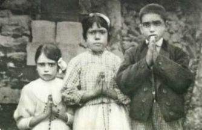
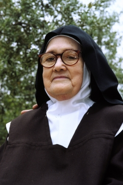
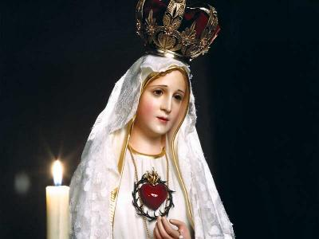
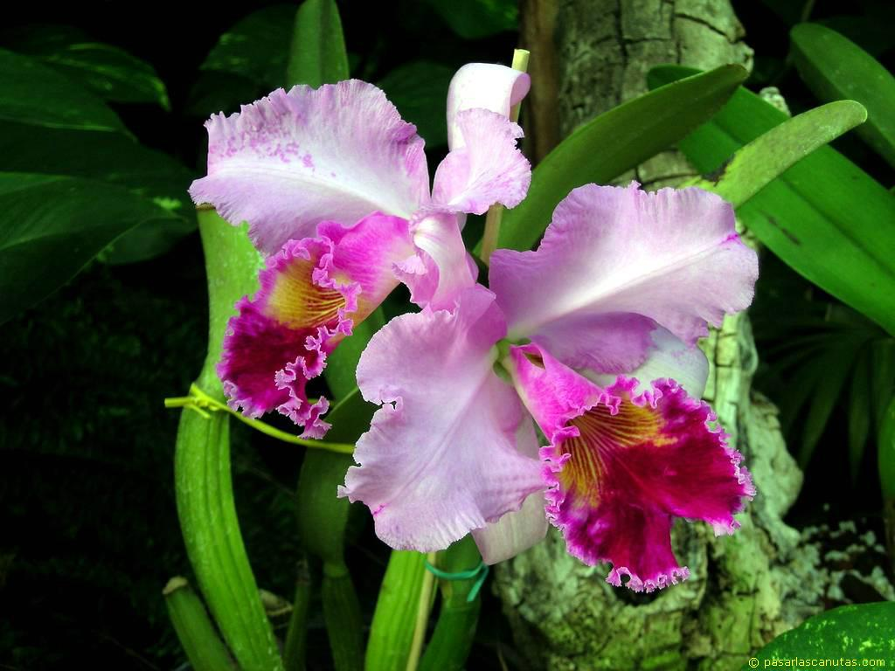

HISTÓRICO DOS ACONTECIMENTOS
A CAMINHO DO CONVENTO
Após as Aparições do
Anjo e de NOSSA SENHORA em Fátima, nos anos 1916/17, e da morte do Francisco
(1919) e da Jacinta (1920), a Lúcia única 
Restaurada a Diocese de Leiria, o Bispo Dom José Alves Correia da Silva, olhou com preocupação para os acontecimentos de Fátima e quis saber de tudo, com todos os detalhes, e também, saber onde se encontrava a Lúcia. Enviou uma senhora de sua confiança, que localizou a casa dos pais da vidente e conseguiu autorização, a fim de conduzi-la a presença do senhor Bispo. Ele interrogou-a longamente sobre as Aparições e orientou-lhe com muitos conselhos, indicando que ela deveria ir para a cidade do Porto, onde não era conhecida, ficando distante do assédio dos peregrinos. Ela não devia conversar com ninguém e manter correspondência com sua família através do Vigário do Olival, homem de confiança do senhor Bispo.
A despedida de Lúcia, da família e dos locais onde encontrou o Anjo e a VIRGEM, foi dolorosa e banhada com muitas lágrimas. NOSSA SENHORA vendo o drama daquela a quem prometera especial proteção, desceu a Terra. Lúcia estava ajoelhada na Cova da Iria, junto à grade de ferro que protegia o pedaço de terra onde havia uma pequena e raquítica azinheira, onde NOSSA SENHORA tinha pousado os pés. Foi então que sentiu em seu ombro a mão amiga e carinhosa da MÃE DE DEUS. Levantou o olhar e repleta de alegria, ouviu o timbre agradável da Voz Materna indicando-lhe o caminho: “Segue por onde o senhor Bispo te quiser levar, essa é a Vontade de DEUS”.
A VIRGEM MARIA voltou para o Céu e Lúcia repleta de felicidade, foi completar as suas despedidas: à Loca do Cabeço, aos Valinhos, ao Poço do Arneiro, a casa dos seus tios, aos quartos do Francisco e da Jacinta, e, finalmente, a velha eira.
COMUNHÃO REPARADORA
No dia 16 de Junho de 1921, em companhia de sua mãe e de um trabalhador foi para a Estação de Leiria, onde embarcou para o Porto, seguindo direto para o Asilo Vilar, aos cuidados das religiosas de Santa Dorotéia, e por ordem do senhor Bispo, adotou o nome de Maria das Dores. Quatro anos depois seguiu para a Espanha para tornar-se religiosa da mesma Congregação. Foi durante o postulantado em Pontevedra, que NOSSA SENHORA no dia 10 de Dezembro de 1925 lhe apareceu para pedir a “Comunhão Reparadora” nos primeiros sábados durante cinco meses consecutivos. Quem receber a Sagrada Comunhão, rezar um Terço, permanecer quinze minutos em companhia de NOSSA SENHORA na Igreja, meditando nos Mistérios do Rosário e antecipadamente tendo feito uma Confissão Sacramental com o mesmo fim, de reparar as ofensas cometidas contra a SANTÍSSIMA VIRGEM MARIA, Ela promete assistir às almas que assim procurarem consolá-La, na hora da morte, com todas as graças necessárias à salvação.
Havendo dúvida sobre a Confissão Sacramental, NOSSO SENHOR explicou que quem já estivesse em “estado de graça”, não precisava se Confessar.
Dia 2 de Outubro de 1926, Lúcia iniciou o Noviciado em Tui, também na Espanha, passando a ser chamada Irmã Maria das Dores. A emissão dos primeiros Votos foi dois anos depois, no dia 2 de Outubro de 1928.
Por sua vontade pessoal Lúcia não queria descrever nada sobre as Aparições e sobre os três pastorzinhos. Humilde e muito modesta, não se sentia a vontade para falar das Aparições, e também, porque tinha receio de mencionar involuntariamente, alguma parte do Segredo que a VIRGEM havia lhe confiado. Todavia, sempre obediente, depois de insistentes argumentos, decidiu atender a ordem do senhor Bispo Dom José Alves e em 1935 começou a escrever a história dos fatos ocorridos e do quotidiano do Francisco e da Jacinta.
Provavelmente foi no mês de Julho de 1916, no alto verão, quando os três pastorzinhos passavam as horas da sesta à sombra das árvores que cercavam o Poço do Arneiro, que aconteceu a segunda Aparição do Anjo. Ele surgiu de repente, e querendo suscitar neles o espírito “reparador”, através de sacrifícios quotidianos, lhes disse:
“Que fazeis? Orai! Orai muito! Os CORAÇÕES SANTÍSSIMOS DE JESUS E MARIA têm sobre vós desígnios de misericórdia. Oferecei constantemente ao Altíssimo orações e sacrifícios.”
Perguntou Lúcia: “Como havemos de nos sacrificar?”
Respondeu o Anjo: - “De tudo o que puderdes, oferecei a DEUS sacrifício em ato de reparação pelos pecados com que ELE é ofendido e de súplica pela conversão dos pecadores. Atraí, assim, sobre a vossa Pátria, a paz. Eu sou o Anjo da sua guarda, o Anjo de Portugal. Sobretudo, aceitai e suportai, com submissão, o sofrimento que o SENHOR vos enviar.”

No Terceiro encontro do Anjo com as crianças, ele trouxe nas mãos um Cálice e uma Hóstia. O Cálice na mão esquerda e a Hóstia na mão direita, e deixando-os suspenso no ar, da Hóstia saíam gotas de sangue que caíam dentro do Cálice. Ele prostrou-se por terra e foi acompanhado pelos pastorzinhos, que também prostrados, repetiram três vezes uma linda oração de dimensão trinitária e eucarística, concretizando o espírito de adoração sacrifical, que ficou conhecida como “Oração do Anjo”:
“SANTÍSSIMA TRINDADE, PAI, FILHO e ESPÍRITO SANTO, adoro-Vos profundamente e ofereço-Vos o preciosíssimo Corpo, Sangue, Alma e Divindade de NOSSO SENHOR JESUS CRISTO, presente em todos os sacrários da Terra, em reparação dos ultrajes, sacrilégios e indiferenças com que ELE Mesmo é ofendido. E pelos méritos infinitos do Seu SANTÍSSIMO CORAÇÃO e do CORAÇÃO IMACULADO DE MARIA, peço-Vos a conversão dos pobres pecadores”.
Nas Aparições de NOSSA SENHORA, Ela também se preocupou em reforçar o pedido de “reparação”. Na terceira Aparição da VIRGEM, no dia 13 de Julho de 1917, Ela ensinou as crianças o modo de como haviam de fazer o oferecimento das suas orações e sacrifícios:
“Sacrificai-vos pelos pecadores e dizei muitas vezes, em especial, sempre que fizerdes algum sacrifício: Ó JESUS, é por Vosso Amor, pela conversão dos pecadores e em reparação pelos pecados cometidos contra o IMACULADO CORAÇÃO DE MARIA”.
Dia 2 de Dezembro de 1940, a Irmã Lúcia escreveu ao Papa Pio XII, pedindo aprovação da prática dos primeiros sábados e a Consagração do Mundo ao CORAÇÃO IMACULADO DE MARIA, com menção especial da Rússia, conforme NOSSA SENHORA havia solicitado. Na promessa da MÃE DE DEUS, como vimos, Ela “promete” , ou seja, Ela empenha a Sua palavra, o Seu Nome, a Sua Oração onipotente e a Sua honra, para a salvação das almas que atenderem o Seu pedido. Depois de ter declarado que o Seu IMACULADO CORAÇÃO será, na vida dos pastorzinhos e também na nossa vida, o refúgio e o caminho para DEUS, assegura-nos agora que será o nosso precioso auxílio também no momento da morte de cada um de seus filhos.
O Papa Pio XII quis satisfazer o pedido da VIRGEM, e na Rádio Vaticano, no dia 31 de Outubro de 1942, Consagrou todo o gênero humano ao CORAÇÃO IMACULADO DE MARIA. No dia 8 de Dezembro do mesmo ano, ele mesmo, renovou a Consagração na Basílica de São Pedro, no Vaticano. Entretanto, em ambas as Consagrações, não foi atendida a parte essencial do “pedido” de NOSSA SENHORA, de ser feita em “união com todos os Bispos do Mundo”. A Consagração perfeita, realizada segundo o desejo da VIRGEM MARIA, só foi feita no dia 25 de Março de 1984, pelo Papa João Paulo II, em Roma, diante da imagem de NOSSA SENHORA que se venera na Capelinha das Aparições, em Fátima. E isto aconteceu depois que o Papa escreveu e convidou todos os Bispos do Mundo inteiro, para que se unissem a ele no ato de Consagração que ia fazer.
Era uma época difícil, como se recorda, em que as grandes potências hostis entre si, projetavam um conflito nuclear. E quem seria capaz de demover aqueles homens arrogantes, a mudarem a intenção? Quem, senão DEUS seria capaz de atuar naquelas inteligências, naquelas terríveis vontades e ambições, pesando naquelas consciências? E mais ainda, a Vontade Divina moveu um dos principais chefes do Comunismo Ateu que se pôs a caminho a Roma para se encontrar com Sua Santidade, o Papa, reconhecendo-o como supremo representante de DEUS, pedindo perdão pelos erros do seu Partido, dando ao Mundo, um testemunho de fé e confiança na Igreja do Único e Verdadeiro DEUS!
Assim, o CORAÇÃO DE DEUS quis converter a Rússia, pela Mensagem de Fátima, para que ela seguisse o seu verdadeiro caminho, a fim de se tornar novamente a Santa Rússia Cristã.
A queda do Comunismo efetivamente começou no dia 13 de Maio de 1989.


